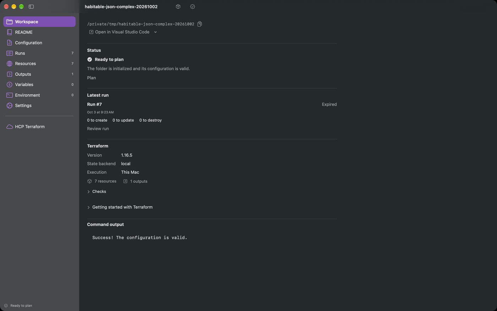
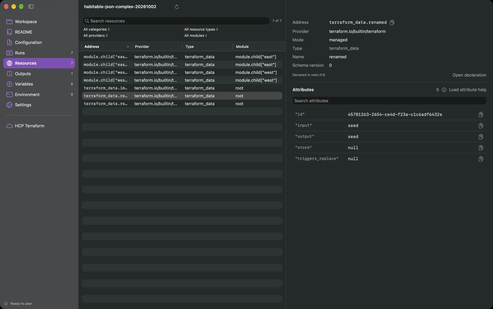
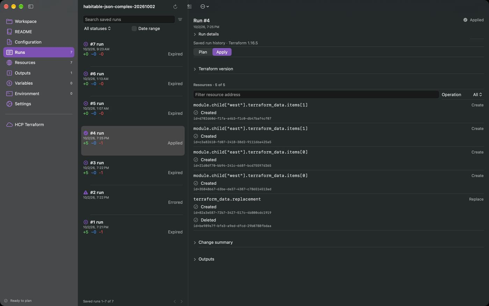
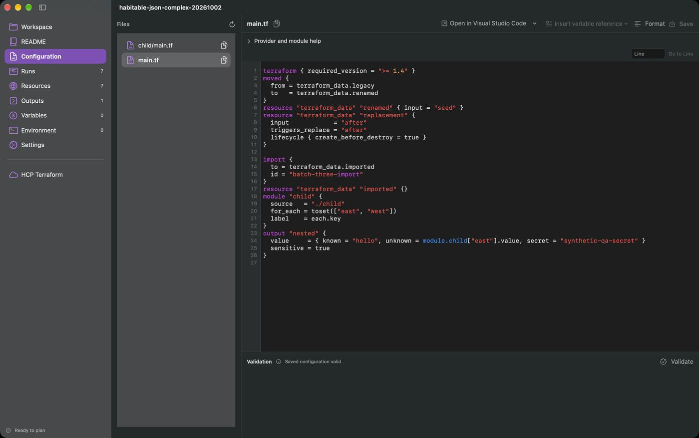
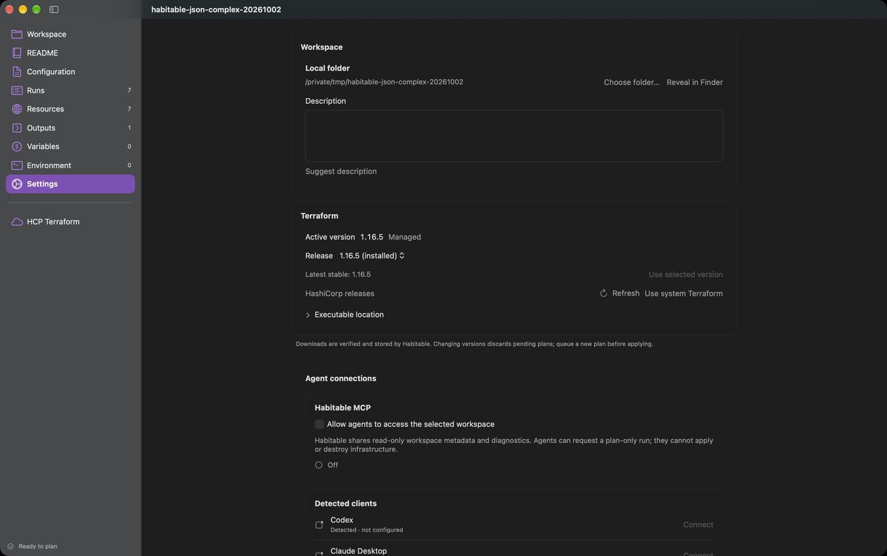
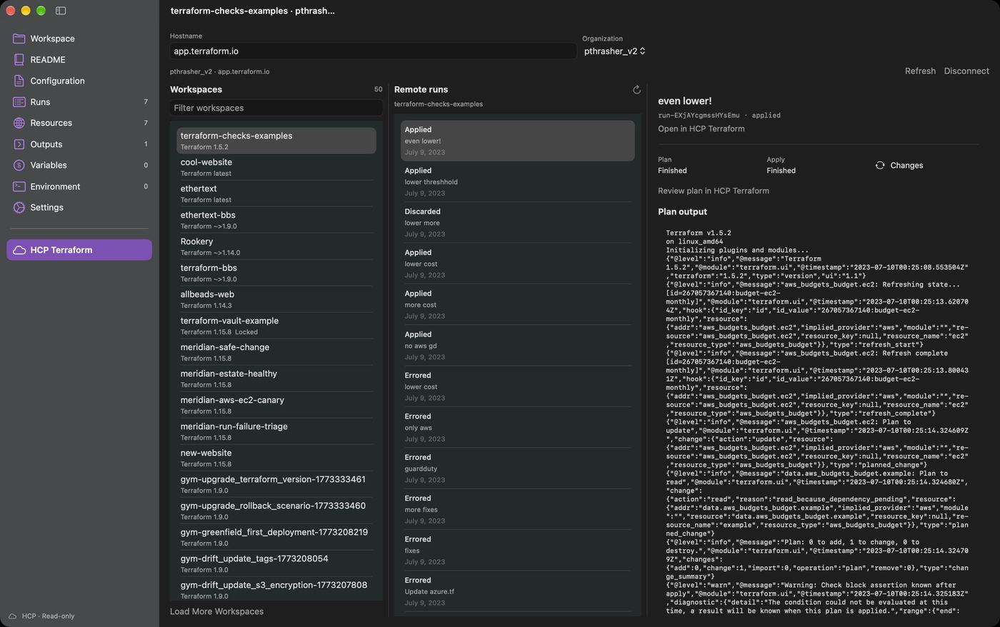
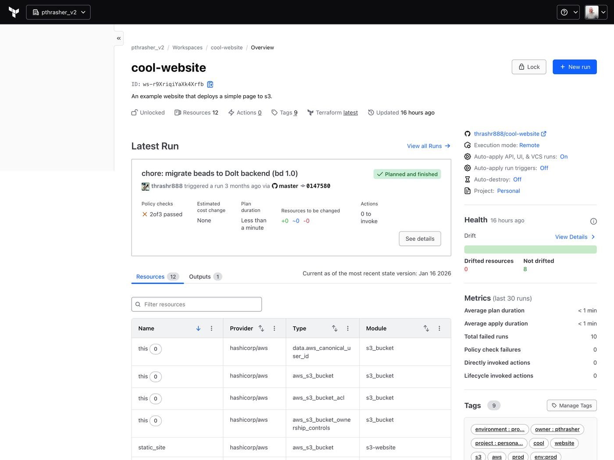
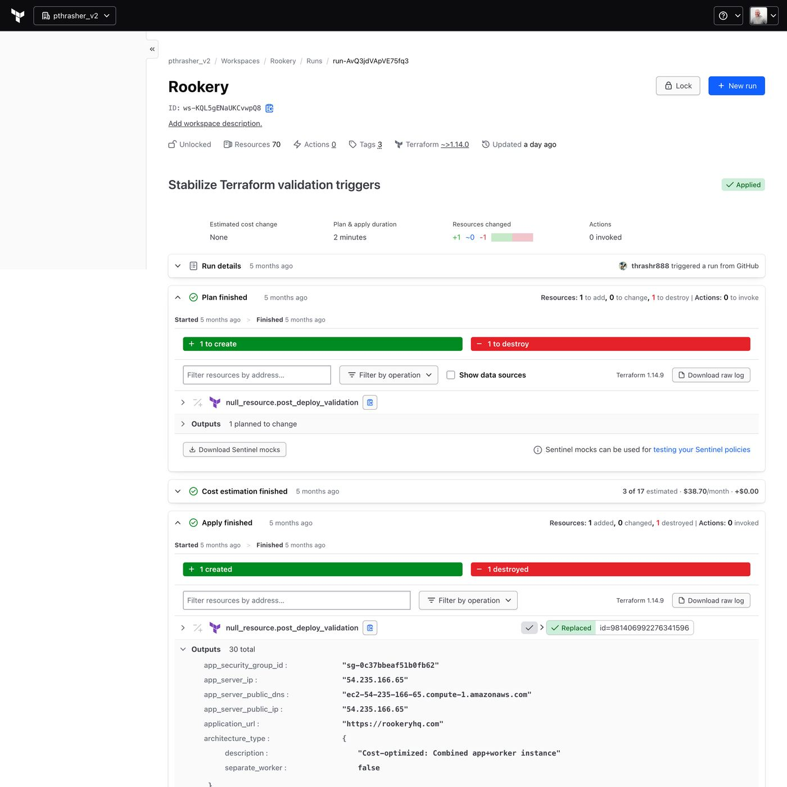

A first-principles rethink of Habitable for newcomers and power users, local folders and HCP Terraform. Resources become the main thing you see and touch. Plans become a preview you watch on a live map. Configuration and runs step back into supporting roles.
Paul's screenshots of the current build, with the friction each one shows. The app is a careful, correct wrapper around the Terraform CLI. It mirrors Terraform's own concepts one-to-one, which is exactly why it feels like managing code.






Reconstructed from the SwiftUI source.
The workspace overview leads with health, drift, tags and a latest-run card that shows policy checks, estimated cost and change counts together. The run page puts “1 to create” and “1 to destroy” as big colored bars above the detail. Habitable should match that information density on day one, then beat it on presentation and interaction.


Someone opening Habitable wants to know what they have, whether it's healthy, what will change, and how to change it safely. Everything else is plumbing.
The first thing you see is your infrastructure, laid out like a place. Files, runs and CLI flags are supporting detail you reach from a resource.
A plan is a preview on the same map you already understand. Additions glow in, removals fade out, replacements are impossible to miss.
“Orders database, PostgreSQL 16” leads. aws_db_instance.orders sits right under it. Nobody loses precision; newcomers gain a foothold.
A folder on your Mac and an HCP Terraform workspace look and behave the same. Where it runs is a badge, not a different app.
Every change is a clip on a timeline. Scrub back to see what your infrastructure looked like last Tuesday, and when it drifted.
⌘K for everything, a table view for bulk work, keyboard navigation across the map, and a menu bar extra for runs in flight.
Today's sidebar lists Terraform's internals as peers. The redesign collapses them into four places: a Library of all your infrastructure, a Map of one workspace, a Timeline of its changes, and an Inspector for whatever is selected.
| Today | Redesign | Why | |
|---|---|---|---|
| Open-folder screen | → | Library home | All local folders and HCP workspaces as living tiles, with what needs attention on top. |
| Workspace overview | → | Map header + Library tile | Health, last change and next step live where you look anyway. |
| Resources | → | Map hero + List view | The canvas is the app. The table stays for bulk and keyboard work. |
| Runs + Run detail | → | Timeline + Preview changes | History is a scrubber along the bottom. A plan is a state of the map, not a log page. |
| Outputs | → | Inspector “Endpoints” | URLs and connection strings sit on the resource that produces them, and in the workspace header. |
| Variables + Environment | → | Inputs sheet | One form with typed fields, asked for only when a preview needs them. |
| Configuration | → | “Defined in” + Source drawer | Every resource links to its file and line, which opens in VS Code or your chosen editor. A small Source drawer covers quick edits. The app is not an IDE. |
| README | → | Library tile “About” | Rendered on the tile's detail and as the empty-map welcome. |
| Settings (workspace) | → | Workspace Info (⌘I) | Backend, Terraform version, auto-apply: a Get Info panel, like Finder. |
| HCP Terraform page | → | Library location | HCP workspaces open in the same Map with a cloud badge. Changes go through pull requests or the API and run remotely. |
The home window, in the spirit of the iMovie project browser. Every workspace you can reach, local or cloud, rendered as a miniature of its own map.
One workspace window, laid out like iMovie: an inventory on the left, the map as the viewer, an inspector on the right, and a timeline of changes along the bottom.
“Plan” becomes Preview. The map switches into a review state: what's new arrives as glowing outlines, what changes turns amber, what will be replaced turns pink, and everything untouched dims. The timeline makes room for a review bar.
The API reconnects to the new endpoint automatically because it reads the address from this database.
Borrowed straight from GarageBand. Turn on Quick Help (?) and hovering anything explains it in a sentence: a resource, a badge, a field in the inspector, a word like “replace”. The same mechanism powers the empty-map welcome when you open a folder that has never been applied.
Terraform reads the files in this folder and makes the real world match them. Press Preview Changes to see what it would create. Nothing happens until you apply.
An output is a value Terraform hands back after applying, like a website address or a database hostname. Habitable shows outputs as Endpoints you can copy or open.
Learn more in Terraform docsA placeholder built into Terraform. It stores a value and is useful for learning, because creating it touches nothing outside your Mac.
The same workspace as a dense, sortable table with filter tokens, plus a command palette that reaches every resource, action and Terraform command. The map is the default; experts can make List the default per workspace.
| Name | Address | Module | Status | Last changed |
|---|---|---|---|---|
| Edge ingress | aws_security_group.edge_ingress | edge | Drifted | Sep 30 |
| HTTPS from anywhere | aws_security_group_rule.https[0] | edge | In sync | Sep 30 |
| HTTPS from anywhere (v6) | aws_security_group_rule.https[1] | edge | In sync | Sep 30 |
| SSH from office | aws_security_group_rule.ssh_office | edge | Drifted | Sep 12 |
| Bastion | aws_security_group.bastion | edge | In sync | Sep 12 |
| Health checks | aws_security_group_rule.lb_health | edge | In sync | Sep 9 |
| Egress all | aws_security_group_rule.egress | edge | In sync | Sep 2 |
| VPN peers | aws_security_group.vpn | edge | In sync | Sep 2 |
GarageBand's project chooser, for infrastructure. Start from a folder you already have, an HCP Terraform workspace, or a template that previews exactly what it will create and roughly what it costs.
In HCP Terraform, Habitable never applies anything from your Mac. A change becomes a pull request, HCP Terraform plans it remotely, and the result lands on the same map as a local preview. Merging and approving happen here, and the run itself happens in HCP Terraform.
Maya Chen approved
Alarm threshold looks right. Ship it before Black Friday traffic.
Apple Design Award winners usually have one unforgettable interaction and a hundred quiet, correct details. These are the candidates for the one.
Drag the timeline playhead and the map animates resources appearing and disappearing through history, built on saved state versions locally and on HCP state versions in the cloud. Let go on a moment to compare it with today.
During Apply, tiles fill in as Terraform reports each resource: a soft progress ring while creating, a settle animation when done, a shake on failure. Watching an apply becomes the satisfying part.
A resource changed outside Terraform gets an amber pulse on the map and a diamond on the timeline. The inspector shows what changed and offers “Put it back” or “Keep it and update code”.
Runs in flight, HCP approvals and drift live in the menu bar. Actionable notifications let you approve an HCP run from Notification Center after checking the preview.
App Intents so Shortcuts and Siri can “Check acme-web for drift”. Spotlight indexes resource names and endpoints. Quick Look on a .tfstate shows the map. Widgets show Library health.
The existing MCP agent access becomes visible: “Ask Claude” in the inspector explains a replacement or drafts the code change that avoids it, and its proposals land as a Preview you review on the map like any other.